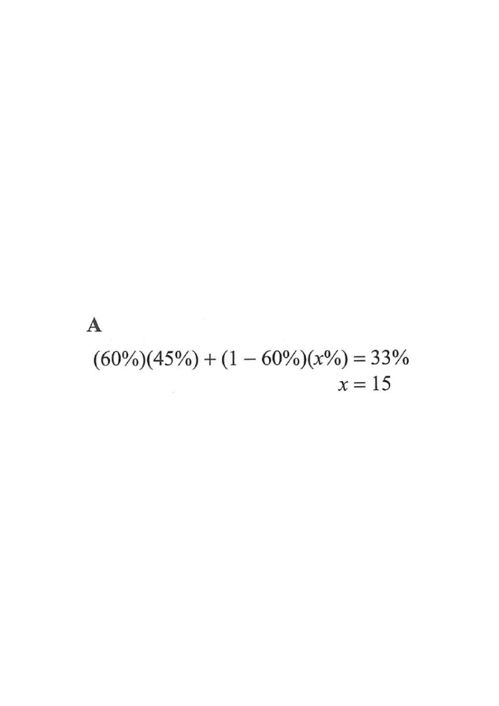

Percentages — weighted average of overweight percentages
In a school, $33\%$ of the students are overweight. It is given that $60\%$ of the students in the school are girls and $45\%$ of the girls are overweight. If $x\%$ of the boys in the school are overweight, then $x =$
- A. 15.
- B. 18.
- C. 25.
- D. 55.

Step-by-step solution
The whole school can be split into two groups only: girls and boys.
Girls $= 60\%$ of all students, so boys $= 1 - 60\% = 40\%$ of all students.
Overweight girls $= 45\%$ of the girls; let $x\%$ of the boys be overweight.
A whole is $100\%$; the two groups must add up to it.Total overweight $=$ overweight girls $+$ overweight boys:
$$(60\%)(45\%) + (40\%)(x\%) = 33\%$$
The school-wide $33\%$ is a percentage of all students, so each group’s share must be weighted by its fraction of the whole.$$(60\%)(45\%) = 0.60 \times 0.45 = 0.27 = 27\%$$
$$(40\%)(x\%) = 0.4 \times \frac{x}{100}$$
So the equation becomes:
$$27\% + (40\%)(x\%) = 33\%$$
Multiplying two percentages: change each to a decimal, then multiply.$$(40\%)(x\%) = 33\% - 27\% = 6\%$$
$$0.4 \times \frac{x}{100} = 0.06 \;\Rightarrow\; \frac{0.4x}{100}=0.06$$
$$0.4x = 6 \;\Rightarrow\; x = 15$$
Subtract the girls’ contribution first, then divide by the boys’ share $40\%$.$$27\% + (40\%)(15\%) = 27\% + 6\% = 33\% \;\checkmark$$
The boys’ overweight rate ($15\%$) is lower than the girls’ ($45\%$), which is consistent with the school average ($33\%$) lying between the two, closer to the girls’ value since girls are the majority.
Always verify: the weighted average must lie between the two group percentages.Question. In a school, \(60\%\) of the students are girls. \(50\%\) of the girls are overweight, and \(32\%\) of all the students are overweight. Find the percentage of the boys who are overweight.